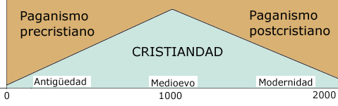

Leo por millonésima vez el lamento del católico tradicionalista ante estos tiempos impíos y autosuficientes que le ha tocado vivir; su amargura de ver a la Iglesia cada vez más relegada en la cultura moderna, su presunción de ser de «los pocos contracorriente» (la «gente como nosotros», «los que nos preocupamos y sufrimos por estos temas»… en contraposición a «la gente común y corriente» – mayoría de curas, obispos y católicos de misa dominical incluidos, claro está); y su devota esperanza (fundada en tales observaciones… en tales coordenadas) de integrar el «pequeño rebaño que Él encontrará cuando vuelva»…
Bueno, ya conocemos el combo… Toda una manera de ver el universo. Que pareciera sentirse apoyada en tres textos del evangelio, muy frecuentados por esta tribu:
A: … cuando el Hijo del hombre venga, ¿encontrará la fe sobre la tierra? Lc 18-8
B: … habrá entonces una gran tribulación, cual no la hubo desde el principio del mundo hasta el presente ni volverá a haberla. Y si aquellos días no se abreviasen, no se salvaría nadie; pero en atención a los elegidos se abreviarán aquellos días. Mt 24.21
C: … tú eres Pedro, y sobre esta piedra edificaré mi Iglesia, y las puertas del Hades no prevalecerán contra ella. Mt 16.18
Los cuales textos son leídos (exégesis incuestionada) más o menos así:
«A» viene a decir que la fe irá disminuyendo con el tiempo, hasta que al final habrá muy poca fe (o sea, pocos católicos … católicos fieles, claro, como nosotros; Karl Rahner o nuestro obispo no cuentan).
«B» viene a decir que estos pocos (los elegidos antedichos) la pasarán pasaremos mal, ante un mundo hostil y prepotente; y que este sufrimiento tiene un mérito casi martirial a los ojos de Dios.
Y «C» viene a decir que no hay que desesperar porque, aunque la Iglesia sea cada vez más insignificante en número e influencia, se conservará -y al final Dios se hartará de este mundo, tomará las riendas de los acontecimientos y ahí van a ver.
(¿Caricatura? Vamos, no quisiera enlazar a blogs y foros… Y tampoco hay que leer demasiado sarcasmo agresivo en estas descripciones mías – yo también tengo mi lotecito ahí, y ni estoy seguro de hasta qué punto compartía o comparto esas maneras de ver las cosas, y de hasta qué punto las considero falsas. De aclarar(me) eso se trata. Calma, pues.)
Sobre estos carriles corren las preocupaciones de esta tribu, y sus debates internos. Porque, en efecto, están muy preocupados por el estado de la Iglesia y del mundo. Y les importa mucho tener opiniones de calidad al respecto; y toman la temperatura del enfermo, y algunos dicen que algunas décimas más y algunos menos, y discuten síntomatologías, y cuándo comenzó el declinar, y las causas y los culpables.
Necesidad imperiosa de saber, de estar al tanto de cómo marchan las cosas. Desde la más baja chismografía clerical hasta las grandes líneas de la historia de la salvación que atraviesan veinte siglos de cristianismo. Que esta necesidad pueda tener algo de pecaminoso, o siquiera de peligroso, no parece preocupar. Y para el caso tenemos otro versículo tranquilizador: se trata de «interpretar los signos de los tiempos» (Mt 16:3), nada menos1. Esfuerzo justo y necesario.
Ahora bien. Los signos de los tiempos, en esta mirada, puede resumirse en «las cosas (nos) van de mal en peor». Y lo que indicarían esos signos es que los tiempos apocalípticos (empezando por el reinado del anticristo) están muy cerca, si es que no son iniciados ya.
Tal vez la conclusión sea correcta – yo no sé. Pero hay demasiadas cosas que me huelen mal acá. Inconsistencias intelecuales y aun espirituales. Cristianamente hablando, por supuesto.
Claro, uno no puede criticar a los apocalípticos: enseguida te tiran citas bíblicas por la cabeza -el sermón parousíaco, Maranatha, etc. Bien. Pero, para empezar, esa justificación para esperar (y aun prever) el finimondo próximo no pega muy bien con las premisas de aquel razonamiento. Estamos mezclando los tantos, me parece. Como si la espera a que se refiere el «Ven Señor Jesús» tuviera menos aplicación en los tiempos «buenos» que en los «malos», como si el cristiano del siglo XIII hubiera tenido menos obligación o justificación para esperar la vuelta inminente de Cristo que el de cristiano actual.
Pero además ¿qué es eso de tiempos mejores y peores? (cristianamente hablando… repito) ¿Cómo es que las cosas cada vez van peor? Al que presume de saber juzgar tal cosa, yo (ingeniero al fin… cartesiano) siento ganas de pedirle que me grafique la evolución en el tiempo en papel cuadriculado; quizá cargar los datos en una planilla Excel, a ver si hacemos un gráfico de barras y unas líneas de tendencia… Por ejemplo, me da curiosidad por saber si existió una época en que las cosas anduvieran cada vez mejor. O si nuestra declinación es constante o con altibajos…
No me burlo. ¿Es absurdo lo que pido? Pero, vean, al tenor de aquellas discusiones, no me parece absurdo. Todos estos opinadores eclesiales discurren en esos términos, como ejecutivos que miran la evolución de la empresa en un gráfico. Disentirán en la forma exacta de la curva, en los valores actuales y de la abcisa del extremo («la Iglesia empezó a decaer en el siglo …») pero al disentir implícitamente están aceptando la existencia de esta curva.2 Aunque, curiosamente, casi nunca la he visto graficada.
Casi, digo, porque hace mucho tiempo (no importa dónde) he visto algo parecido a esto:

Por lo pronto no me interesa la escala de los ejes, ni los años precisos (pongan siglo XIII o XV si prefieren en el máximo; y claro está que la cristiandad no existía en el año cero!) ni la precisa magnitud graficada (¿cristiandad? ¿cristianismo? ¿cristianos? ¿en el mundo o en Europa o dónde?) ni las etiquetas. Lo que me importa por ahora es discernir si: 1) la actitud apocalíptica de la tribu supone (implícitamente) dar por bueno un gráfico similar; 2) en qué sentido puede ser este gráfico (correcciones de detalle aparte) verdadero; 3) hasta que punto puede justificar legítimamente aquella actitud apocalíptica; 4) qué puede tener de falso, irrelevante o nefasto. Cristianamente hablando, siempre.
A lo primero yo respondería que sí. El resto, quedará para otro día.
1. Después vemos que, por ejemplo, «interpretar los signos de los tiempos» significa para algunos de estos intelectuales católicos (porque son intelectuales católicos – y adultos) relacionar el terremoto de Haití con el hecho de que ese sea «el único país oficialmente consagrado a Satanás». (Naturalmente, que el terremoto de Lisboa de 1755 ocurriera en uno de los países más católicos del mundo, en una de las festividades más importantes del catolicismo, destruyendo casi todas las iglesias -feligreses incluidos… eso no es un signo de los tiempos – al menos no es un signo estimulante para blogueros y foristas católicos ) . Por eso, digo: de caricaturas, aquí, nada.
2. Objeción: Bien se puede decir que «en la década del ’60 el tango experimenta una decadencia» o que «mi amor por [tal persona o tal cosa] se ido enfriando en los últimos tiempos» y sin embargo esas cosas no pueden medirse y por lo tanto graficarse. Respondo: aunque no haya una medida numérica objetiva, si percibimos aumentos o disminuciones en el objeto (el tango o el amor) a lo largo del tiempo, siempre podemos asignarle valores (relativos, en escala arbitraria pero consistente) y por lo tanto sí que podemos graficarla, con todas las limitaciones de cada caso. No pedimos más.
{kind=link}